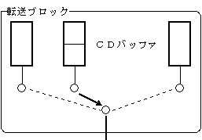
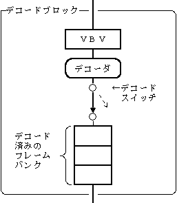
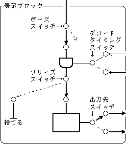
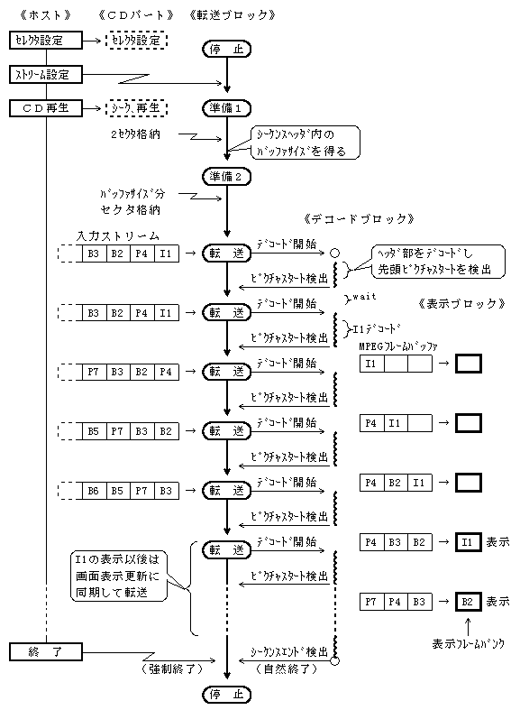
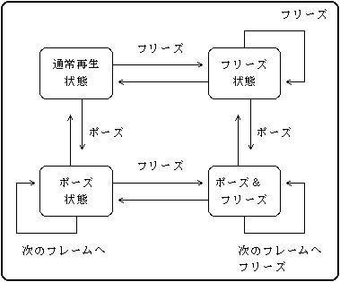
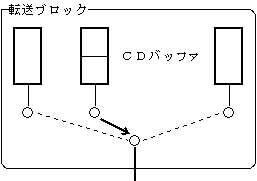
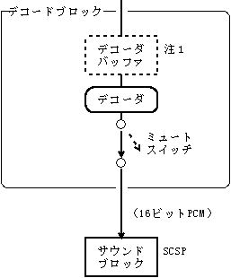

★PROGRAMMER'S GUIDE
★CD通信I/F(MPEGパート)
★PROGRAMMER'S GUIDE
★CD通信I/F(MPEGパート)
| 制御可能な項目 | |
|---|---|
 |
《転送ブロック》 ・再生するストリームの登録 ・次に再生するストリームの登録 ・ストリームデータの転送 ・動画の強制切り替え |
 |
《デコードブロック》 ・デコードの開始 ・デコードの停止 ・デコーダバッファ内のデータの消去 |
 |
《表示ブロック》 ・デコードタイミングの切り替え ・動画のポーズの設定と解除 ・動画のフリーズの設定と解除 ・出力先の切り替え |

ＶＢＶバッファ ＭＰＥＧフレームバッファ ┌────┬─┬──┐ ┌────┐ ┌─┬──┬───┬───┐ │ │ ｜ │→│デコーダ│→│ ｜ │ │ │ └────┴─┴──┘ └────┘ └─┴──┴───┴───┘ 未デコード ↑ ↑ │ デコード済み │ 次のピクチャ開始
ＶＢＶバッファ ＭＰＥＧフレームバッファ ┌────┬────┐ ┌────┐ ┌─┬──┬───┬───┐ │ │ │→│デコーダ│→│ ｜ │ │ │ └────┴────┘ └────┘ └─┴──┴───┴───┘ ↑ ↑ 次のピクチャ開始 処理中のピクチャのデコードは完了する
デコード同期信号のタイミングを規定する。VSYNC同期によりデコードを行うか、ホスト同期によりデコードを行うかを指定できる。
ポーズスイッチを開くことにより、動画のポーズを設定する。ポーズ中は、イメージデータがポーズスイッチより先へは流れないので、画像の更新を行わない。ポーズスイッチを閉じることにより、動画の一時停止を解除する。
また、再ポーズの間隔を指定することにより、スロー再生ができる。
フリーズスイッチを開くことにより、動画のフリーズを設定する。フリーズ中は、イメージデータをフリーズスイッチから捨てるので、画像の更新を行わない。フリーズスイッチを閉じることにより、動画のフリーズを解除する。
また、再フリーズの間隔を指定することにより、ストロボ再生ができる。
画像データの出力先を切り替える。出力先として、VDP2とホストを設定できる。
| 状態 | スイッチの状態 | 説 明 | ||
|---|---|---|---|---|
| ポーズ | フリーズ | |||
| 1 | 通常再生 | 閉 | 閉 | 通常の再生をしている。 |
| 2 | ポーズ | 開 | 閉 | 動画が止まっている。 イメージデータはポーズスイッチのところで止まっている。 |
| 3 | フリーズ | 閉 | 開 | 動画が止まっている。 イメージデータはフリーズスイッチから捨てている。 |
| 4 | ポーズ | 開 | 開 | 動画が止まっている。 イメージデータはポーズスイッチのところで止まっている。 ポーズを解除してもフリーズ状態となり、動画の再生を再開しない。 |
図4.3 MPEG/Video表示ブロックの状態遷移図

| 制御可能な項目 | |
|---|---|
 |
《転送ブロック》 ・再生するストリームの登録 ・次に再生するストリームの登録 ・ストリームデータの転送 ・ストリームの切り替え ・ストリーム番号、チャネル番号の設定 |
 |
《デコードブロック》 ・デコードの開始 ・デコードの停止 ・オーディオのミュート |
左右独立にミュートする。
オーディオデコーダにストリームが入力されたときに、先頭のオーディオフレーム３個分のデータ（約100msec）をミュートする。
図4.5 多国語の再生
バッファ区画 ┌────┬────┬────┬────┬────┬────┬────┐ ┌────┐ │ＣＮ＝３│ＣＮ＝２│ＣＮ＝１│ＣＮ＝３│ＣＮ＝２│ＣＮ＝１│ＣＮ＝３│ＣＮ＝１│デコーダ│ │ 仏 │ 英 │ 日 │ 仏 │ 英 │ 日 │ 仏 │ → │ │ └────┴────┴────┴────┴────┴────┴────┘ └────┘ チャネル番号１番(CN=1)の日本語を再生している例を示す。 フランス語や英語のオーディオデータは、日本語のデータの再生に合わせて破棄されていく。
★PROGRAMMER'S GUIDE
★CD通信I/F(MPEGパート)